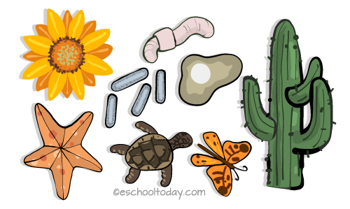

what is Asexual Reproduction
Asexual Reproduction in living organisms is the making of
their offspring (young ones) from the cell of only one parent without the need for the opposite gender.
Reproduction ensures that living organisms are maintained so that as older ones die, new offsprings
are produced to replace them. Reproduction in living organisms happens in two interesting ways: Sexual
and Asexual Reproduction. In both ways, new offsprings are made although the processes are distinctively
different. Offspring in biology is the young organism produced by its parent organism. An offspring
can be a product of sexual reproduction or asexual reproduction.
How do living things reperoduce? Which of these organisms reproduce asexually?What is asexual reproduction
for young students

Differences between Asexual and Sexual reproduction.
Asexual Reproduction
- Only ONE parent is involved.
- There are no sex cells released and there is no fertilization involved.
- The offspring are produced by cell division. As a result, the offspring are identical to the
parent and have the identical genetic makeup (DNA). The biological term for two organisms
with the same DNA is 'clone'.
- Asexual reproduction is common in simpler life forms such as yeast, amoebas, and bacteria.
Sexual Reproduction
- Here, TWO parents are involved.
- One parent, often the male one produces a male cell (known as sperm cell). The other parent which
is a female produces the egg cell (known as ovum). Both cells are called gametes. These gametes
join in a process called fertilization.
- The offsprings from sexual reproduction are not identical to the parents, because the DNA (genetic
traits) come from two different individuals. Complex life forms such as humans, reptiles,
and mammals reproduce sexually.
- Types of asexual reproduction include Binary Fission, Budding, Regeneration, Spore Formation,
Fragmentation, Vegetative Propagation and so on. Here is more.